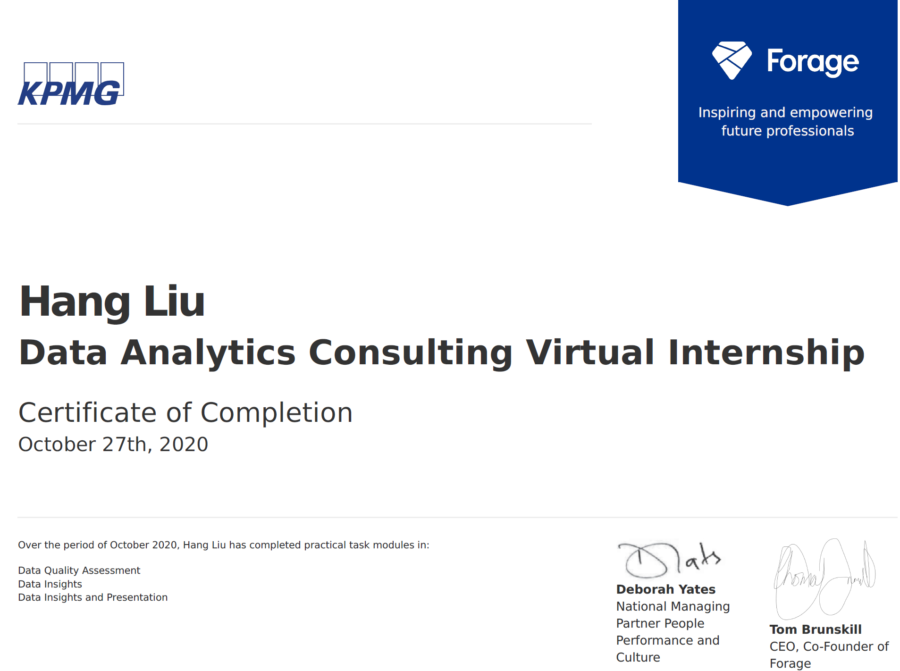

KPMG Data Analytics Virtual Internship
In the project organised by KPMG, I have done marketing analysis and identified the top valued customers segment for a business which sells bicycles and assessories.
The project is made by 3 tasks. In the task1, I used Pandas to clean the raw data and re-engineering features. In task2, I used Pandas and RFM model to identify the top valued customer segment. In task3, I used Tableau to create data visualisation dashboards.
Technologies
- Pandas
- Numpy
- Matplotlib
- Tableau